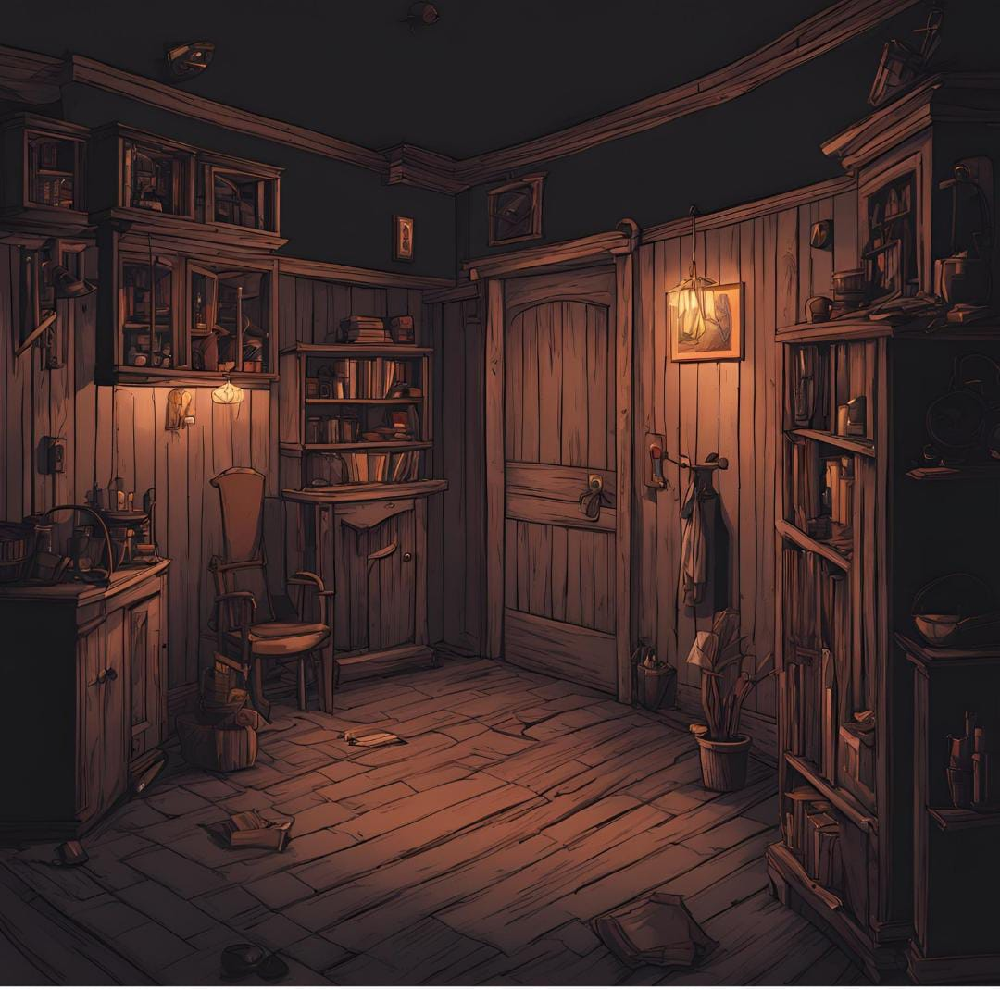

Um Noite chuvosa você escuta barulhos estranhos do lado de fora como se fosse grunhido macabro, Mas você decide ignorar e procura algo para distrair a mente...
OUvocê escolheu assistir tv e ficou vivo por não ter saido do apartamento, viu no jornal um reporter comentando sobre a situação e agora vc entende um pouco do que está acontecendo
OU